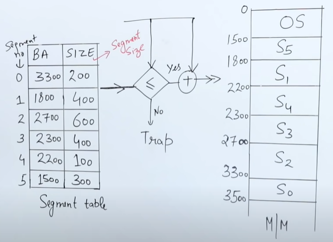

>A process is divided into Segments. The chunks that a program is divided into which are not necessarily all of the same sizes are called segments. Segmentation gives user’s view of the process which paging does not give. Here the user’s view is mapped to physical memory.
>Each part is known as segment which can be allocated to a process. The details about each segment are stored in a table called a segment table.This table is referenced for conversion between logical and physical addresses
